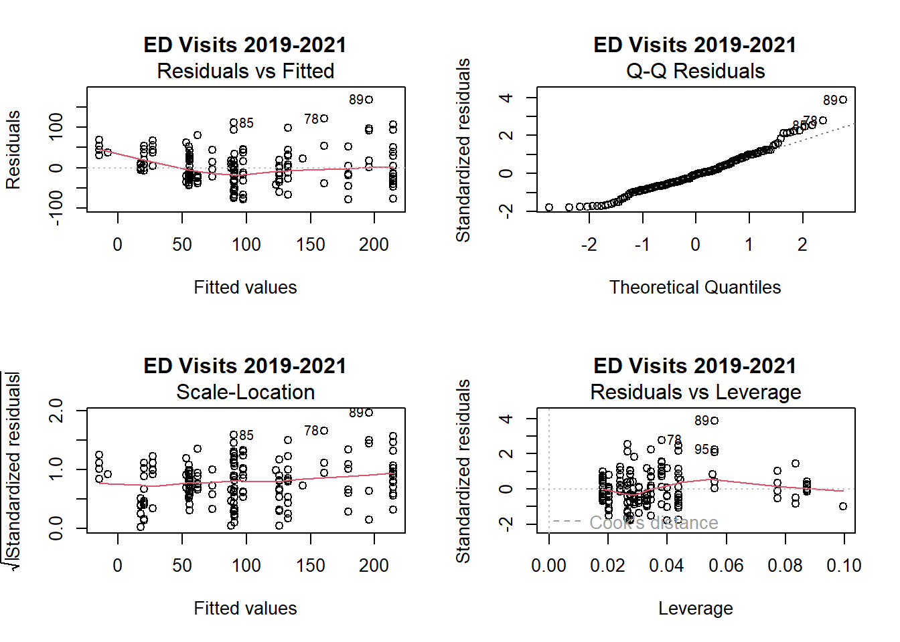
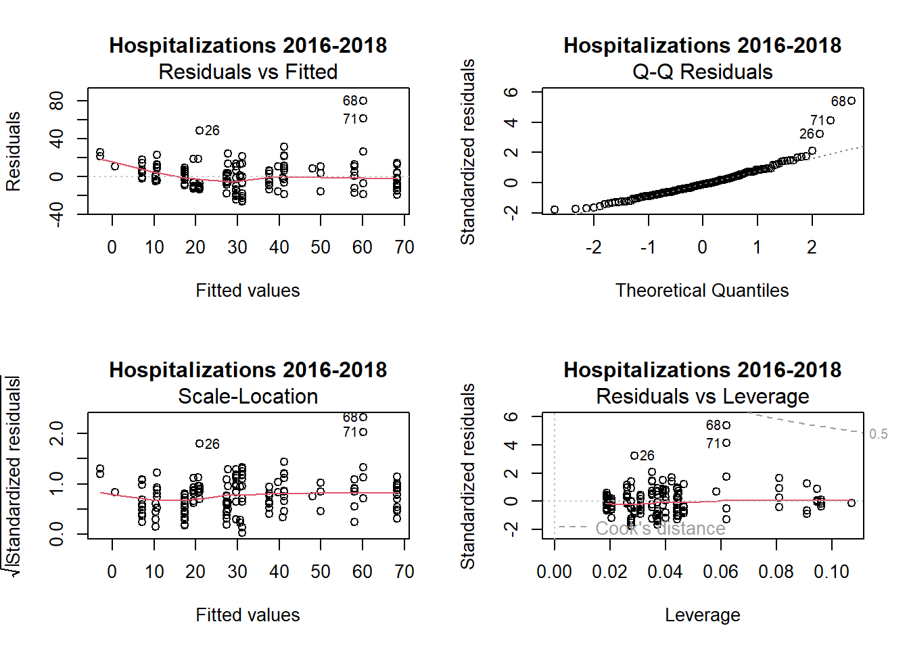
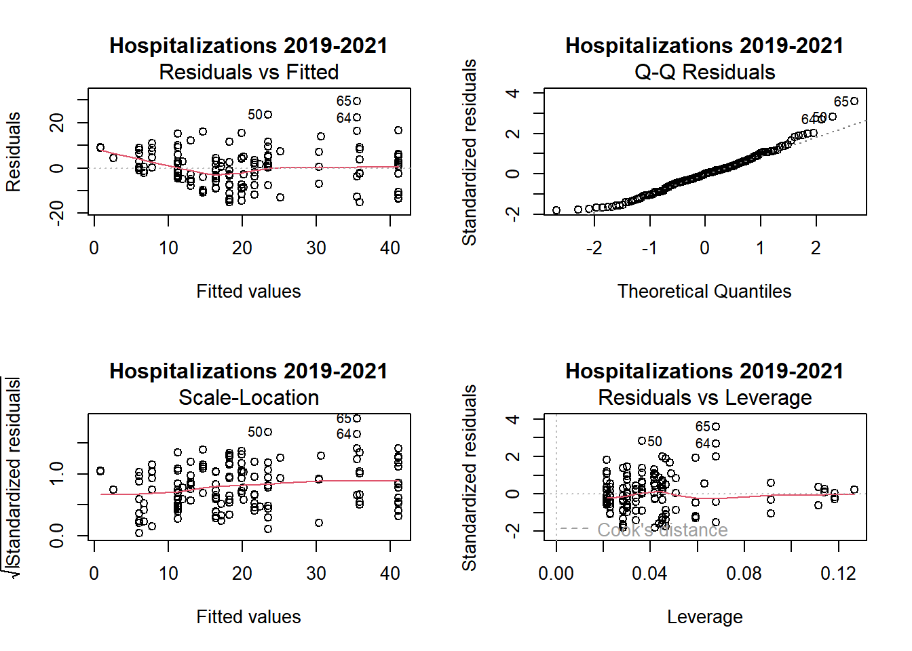
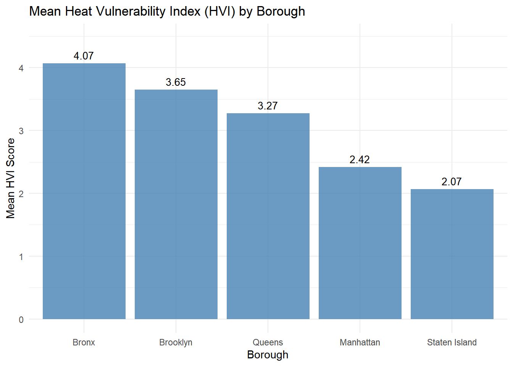

Linear Modelling
Data Preparation
# Load libraries
library(tidyverse)
library(broom)
library(patchwork)
library(lmtest)
library(car)
# Read full data
full_data2 = read_csv("data/NYC_total.csv")
# Data ED Visits (2016-2018)
full_data2_ed_1 = full_data2 |>
mutate(hvi = as.numeric(hvi)) |>
filter(indicator == "ed_visits_rate") |>
filter(data_years == "2016-2018")
## Datasets for Graphing (datasets 1 & 2):
## Changing HVI to numeric
# Data ED Visits (2019-2021)
full_data2_ed_2 = full_data2 |>
mutate(hvi = as.numeric(hvi)) |>
filter(indicator == "ed_visits_rate") |>
filter(data_years == "2019-2021")
# Data Hospitalizations (2016-2018)
full_data2_hosp_1 = full_data2 |>
mutate(hvi = as.numeric(hvi)) |>
filter(indicator == "hosp_rate") |>
filter(data_years == "2016-2018")
# Data Hospitalizations (2019-2021)
full_data2_hosp_2 = full_data2 |>
mutate(hvi = as.numeric(hvi)) |>
filter(indicator == "hosp_rate") |>
filter(data_years == "2019-2021")
## Datasets for Statistical Analysis (datasets 3 & 4):
## Keeping HVI as a factor variable
# Data ED Visits (2016-2018)
full_data2_ed_3 = full_data2 |>
filter(indicator == "ed_visits_rate") |> # filtering only ed_visits
filter(data_years == "2016-2018")
# Data ED Visits (2019-2021)
full_data2_ed_4 = full_data2 |>
filter(indicator == "ed_visits_rate") |> # filtering only ed_visits
filter(data_years == "2019-2021")
# Data Hospitalizations (2016-2018)
full_data2_hosp_3 = full_data2 |>
filter(indicator == "hosp_rate") |> #filtering only hospitlization rate
filter(data_years == "2016-2018")
# Data Hospitalizations (2019-2021)
full_data2_hosp_4 = full_data2 |>
filter(indicator == "hosp_rate") |> #filtering only hospitlization rate
filter(data_years == "2019-2021")Linear Regression Models
rate = how many people visited per 10,000
Emergency Department Visits
2016-2018 period
# Fit linear regression model for ED visits (2016-2018)
# Examining relationship between visit rates and borough/HVI
fit = lm(zip_code_rate ~ borough + hvi, data = full_data2_ed_3)
# Format results table
results_table = tidy(fit) |>
select(-statistic) |>
knitr::kable(digit = 3)
# Display table
results_table| term | estimate | std.error | p.value |
|---|---|---|---|
| (Intercept) | 68.358 | 28.085 | 0.016 |
| boroughBrooklyn | -158.440 | 22.653 | 0.000 |
| boroughManhattan | -37.827 | 24.314 | 0.122 |
| boroughQueens | -169.356 | 21.400 | 0.000 |
| boroughStaten Island | -113.008 | 32.551 | 0.001 |
| hvi | 69.150 | 5.452 | 0.000 |
The linear regression model examines how pediatric asthma ED visit rates (per 10,000 children) are associated with borough and heat vulnerability index (HVI), using the Bronx as the reference borough.
Compared to the Bronx, Queens shows the largest reduction in ED visits (-169.36 visits, p < 0.001), followed by Brooklyn (-158.44 visits, p < 0.001) and Staten Island (-113.01 visits, p = 0.001). Manhattan’s lower rate (-37.83 visits) was not statistically significant (p = 0.122). Heat vulnerability shows a strong positive association with ED visits: for each one-unit increase in HVI score, ED visit rates increase by approximately 69.15 visits per 10,000 children (p < 0.001).
This model indicates that both geographic location and heat vulnerability are significant predictors of pediatric asthma ED visits, with the Bronx experiencing substantially higher rates than most other boroughs.
2019-2021 period
# Fit linear regression model for ED visits (2019-2021)
# Examining relationship between visit rates and borough/HVI
fit2 = lm(zip_code_rate ~ borough + hvi, data = full_data2_ed_4)
# Format results table
results_table2 = tidy(fit2) |>
select(-statistic) |>
knitr::kable(digit = 3)
# Display table
results_table2| term | estimate | std.error | p.value |
|---|---|---|---|
| (Intercept) | 38.544 | 14.538 | 0.009 |
| boroughBrooklyn | -81.901 | 11.612 | 0.000 |
| boroughManhattan | -18.588 | 12.526 | 0.140 |
| boroughQueens | -88.609 | 10.981 | 0.000 |
| boroughStaten Island | -55.996 | 16.715 | 0.001 |
| hvi | 35.180 | 2.840 | 0.000 |
For the 2019-2021 time period, Queens shows the largest reduction in ED visits compared to the Bronx (-88.61 visits, p < 0.001), closely followed by Brooklyn (-81.90 visits, p < 0.001). Staten Island shows fewer visits (-55.99, p = 0.001), while Manhattan’s lower rate (-18.59 visits) remains not statistically significant (p = 0.140).
The HVI effect remains significant but notably smaller than the previous period: each one-unit increase in HVI score is associated with an increase of 35.18 visits per 10,000 children (p < 0.001), roughly half the effect seen in 2016-2018.
Hospitalizations
2016-2018 period
# Fit linear regression model for hospitalizations (2016-2018)
fit3 = lm(zip_code_rate ~ borough + hvi, data = full_data2_hosp_3)
# Format results table
results_table3 = tidy(fit3) |>
select(-statistic) |>
knitr::kable(digit = 3)
# Display table
results_table3| term | estimate | std.error | p.value |
|---|---|---|---|
| (Intercept) | 17.547 | 5.124 | 0.001 |
| boroughBrooklyn | -27.036 | 3.973 | 0.000 |
| boroughManhattan | -8.171 | 4.460 | 0.069 |
| boroughQueens | -30.619 | 3.767 | 0.000 |
| boroughStaten Island | -17.282 | 5.870 | 0.004 |
| hvi | 10.143 | 1.018 | 0.000 |
The linear regression model examines pediatric asthma hospitalization rates per 10,000 children, with the Bronx as the reference borough.
For the 2016-2018 time period, Queens shows the largest reduction in hospitalizations compared to the Bronx (-30.62 visits, p < 0.001), followed by Brooklyn (-27.04 visits, p < 0.001) and Staten Island (-17.28, p = 0.004). Manhattan’s lower rate (-8.17 visits) is not statistically significant (p = 0.069).
The HVI effect is significant but smaller when compared to ED visits: each one-unit increase in HVI score is associated with an increase of 10.14 hospitalizations per 10,000 children (p < 0.001).
2019-2021 period
# Fit linear regression model for hospitalizations (2019-2021)
fit4 = lm(zip_code_rate ~ borough + hvi, data = full_data2_hosp_4)
results_table4 = tidy(fit4) |>
select(-statistic) |>
knitr::kable(digit = 3)
# Format results table
results_table4 = tidy(fit4) |>
select(-statistic) |>
knitr::kable(digit = 3)
# Display table
results_table4| term | estimate | std.error | p.value |
|---|---|---|---|
| (Intercept) | 15.002 | 3.040 | 0.000 |
| boroughBrooklyn | -17.650 | 2.263 | 0.000 |
| boroughManhattan | -5.561 | 2.618 | 0.035 |
| boroughQueens | -19.441 | 2.180 | 0.000 |
| boroughStaten Island | -13.552 | 3.524 | 0.000 |
| hvi | 5.227 | 0.599 | 0.000 |
For the 2019-2021 time period, Queens shows the largest reduction in hospitalizations compared to the Bronx (-19.44 visits, p < 0.001), followed by Brooklyn (-17.65 visits, p < 0.001) and Staten Island (-13.55, p < 0.001). Unlike previous models, Manhattan’s lower rate (-5.56 visits) is now statistically significant (p = 0.035).
The HVI effect remains significant but shows the smallest magnitude across all models: each one-unit increase in HVI score is associated with an increase of 5.23 hospitalizations per 10,000 children (p < 0.001).
Summary of models
Examining all four models reveals a consistent pattern: Queens shows the lowest rates while the Bronx shows the highest, and higher HVI scores are consistently associated with higher rates of both ED visits and hospitalizations.
Model Diagnostics
# Basic diagnostic tests for each model
# Function for basic diagnostics
basic_diagnostics = function(model, model_name) {
# Shapiro-Wilk test for normality
sw_test = shapiro.test(residuals(model))
# Breusch-Pagan test for heteroscedasticity
bp_test = bptest(model)
# Create results
results = data.frame(
Model = model_name,
Test = c("Shapiro-Wilk (Normality)", "Breusch-Pagan (Heteroscedasticity)"),
Statistic = c(sw_test$statistic, bp_test$statistic),
P_Value = c(sw_test$p.value, bp_test$p.value)
)
return(results)
}
# Run diagnostics for all models
all_diagnostics = rbind(
basic_diagnostics(fit, "ED Visits 2016-2018"),
basic_diagnostics(fit2, "ED Visits 2019-2021"),
basic_diagnostics(fit3, "Hospitalizations 2016-2018"),
basic_diagnostics(fit4, "Hospitalizations 2019-2021")
)
# Display results
knitr::kable(all_diagnostics, digits = 4)| Model | Test | Statistic | P_Value | |
|---|---|---|---|---|
| W | ED Visits 2016-2018 | Shapiro-Wilk (Normality) | 0.9598 | 0.0001 |
| BP | ED Visits 2016-2018 | Breusch-Pagan (Heteroscedasticity) | 24.4773 | 0.0002 |
| W1 | ED Visits 2019-2021 | Shapiro-Wilk (Normality) | 0.9678 | 0.0006 |
| BP1 | ED Visits 2019-2021 | Breusch-Pagan (Heteroscedasticity) | 24.8450 | 0.0001 |
| W2 | Hospitalizations 2016-2018 | Shapiro-Wilk (Normality) | 0.9028 | 0.0000 |
| BP2 | Hospitalizations 2016-2018 | Breusch-Pagan (Heteroscedasticity) | 18.4125 | 0.0025 |
| W3 | Hospitalizations 2019-2021 | Shapiro-Wilk (Normality) | 0.9769 | 0.0177 |
| BP3 | Hospitalizations 2019-2021 | Breusch-Pagan (Heteroscedasticity) | 26.1240 | 0.0001 |
Our diagnostic testing examined two key model assumptions using Shapiro-Wilk tests for normality and Breusch-Pagan tests for homoscedasticity. Results indicate statistical significance (p < 0.05) for violations of both assumptions. However, with moderate to large sample sizes (ED visits: n=171 for 2016-2018, n=168 for 2019-2021; Hospitalizations: n=155 for 2016-2018, n=140 for 2019-2021), our models maintain reasonable robustness to these violations. The Shapiro-Wilk statistics (all W > 0.90) suggest only mild deviations from normality. The Breusch-Pagan tests indicate the presence of heteroscedasticity, but this primarily affects efficiency rather than consistency of our estimates. Therefore, while not perfect, our models provide reliable insights into the relationships between borough characteristics, heat vulnerability, and health outcomes.
# Basic diagnostic plots for all models
par(mfrow=c(2,2))
plot(fit, main="ED Visits 2016-2018")
par(mfrow=c(2,2))
plot(fit2, main="ED Visits 2019-2021")
par(mfrow=c(2,2))
plot(fit3, main="Hospitalizations 2016-2018")
par(mfrow=c(2,2))
plot(fit4, main="Hospitalizations 2019-2021")
The diagnostic plots show important patterns across our models:
QQ Plots show moderate deviations from normality, particularly in the tails. This is most observable in the hospitalizations 2016-2018 model, where observations 68 and 71 deviate notably from the expected normal line. However, the overall pattern seems to suggest only mild violations of normality, for both ED visits and hospitalizations models.
Residuals vs Fitted plots indicate relatively consistent spread around zero, though with some heteroscedasticity at higher fitted values, especially in the ED visits models. The hospitalization models show a more consistent pattern, which would indicate a better fit for these outcomes.
Scale-Location plots confirm the presence of mild heteroscedasticity, with slightly increasing spread in the standardized residuals as fitted values increase. This pattern is more evident in the ED visits models than in the hospitalization models.
Residuals vs Leverage plots show a few potentially influential observations (e.g., observations 75 and 76 in ED visits 2016-2018; 68 and 71 in hospitalizations 2016-2018), but none appear to exceed Cook’s distance thresholds (dotted lines). This indicates these points do not greatly impact our model estimates.
While these diagnostics do appear to suggest some deviation from model assumptions, the violations are not severe enough to invalidate our main findings, particularly given our moderately large sample sizes.
Borough-Level HVI Analysis
# Calculate average HVI scores for each borough
# This helps understand overall heat vulnerability patterns across boroughs
daa = full_data2 |>
mutate(hvi = as.numeric(hvi)) |>
group_by(borough) |>
summarise(hvi_mean = mean(hvi))
# Produce table
knitr::kable(daa)| borough | hvi_mean |
|---|---|
| Bronx | 4.070707 |
| Brooklyn | 3.653061 |
| Manhattan | 2.418605 |
| Queens | 3.274419 |
| Staten Island | 2.068182 |
The mean Heat Vulnerability Index varies considerably across NYC boroughs, with the Bronx showing the highest average (4.07), followed by Brooklyn (3.65), Queens (3.27), Manhattan (2.42), and Staten Island (2.07). This suggests that heat vulnerability is not evenly distributed across the city, with some boroughs experiencing systematically higher heat vulnerability than others. The notable variation in HVI means across boroughs indicates that geographic and demographic factors play an important role in heat vulnerability distribution throughout New York City.
Visualization of Relationships
# Create visualization plots showing relationship between HVI scores and health outcomes
# Four plots examine ED visits and hospitalizations across both time periods
# Create plots
plot1 = ggplot(full_data2_ed_1, aes(x = hvi, y = zip_code_rate)) +
geom_point(color = "blue", alpha = 0.6) +
geom_smooth(method = "lm", color = "red", se = TRUE) +
labs(title = "ED Visit rate per HVI score (2016-2018)",
x = "HVI", y = "ED Visit Rate") +
theme_minimal()
plot2 = ggplot(full_data2_ed_2, aes(x = hvi, y = zip_code_rate)) +
geom_point(color = "blue", alpha = 0.6) +
geom_smooth(method = "lm", color = "red", se = TRUE) +
labs(title = "ED Visit rate per HVI score (2019-2021)",
x = "HVI", y = "ED Visit Rate") +
theme_minimal()
plot3 = ggplot(full_data2_hosp_1, aes(x = hvi, y = zip_code_rate)) +
geom_point(color = "blue", alpha = 0.6) +
geom_smooth(method = "lm", color = "red", se = TRUE) +
labs(title = "Hospitalization rate per HVI score (2016-2018)",
x = "HVI", y = "Hospitalization Rate") +
theme_minimal()
plot4 = ggplot(full_data2_hosp_2, aes(x = hvi, y = zip_code_rate)) +
geom_point(color = "blue", alpha = 0.6) +
geom_smooth(method = "lm", color = "red", se = TRUE) +
labs(title = "Hospitalization rate per HVI score (2019-2021)",
x = "HVI", y = "Hospitalization Rate") +
theme_minimal()
# Combine plots with adjusted height and width
(plot1 + plot2) / (plot3 + plot4) +
patchwork::plot_layout(heights = c(3, 3), widths = c(3, 3))
The scatter plots show consistent positive relationships between Heat Vulnerability Index and both pediatric asthma health outcomes across time periods. ED visit rates show a stronger association with HVI than hospitalization rates, as observed in steeper trend lines. The relationship appears more pronounced in the 2016-2018 period, with ED visits ranging from 0 to approximately 700 per 10,000 across HVI scores, compared to 0-350 in 2019-2021.
While the overall patterns persist in 2019-2021, the rates are lower, particularly for ED visits. The considerable vertical spread in the data points at each HVI level suggests that other factors beyond heat vulnerability influence pediatric asthma health outcomes.